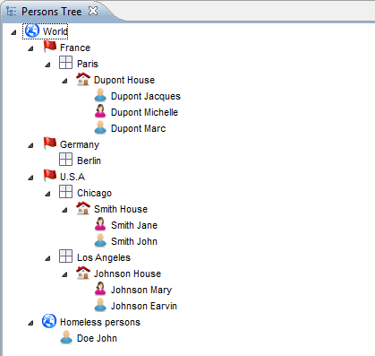
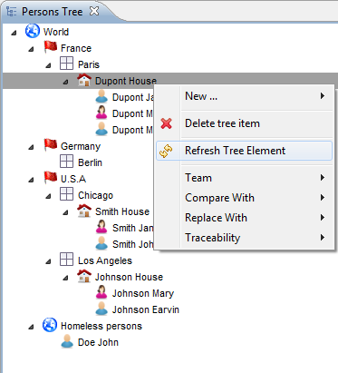
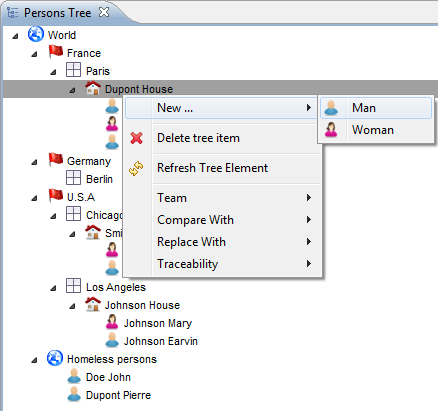
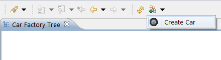

This document explains how to use Sirius tree editors/modelers which allow to view and manipulate data in a hierarchical way.
Sirius provides support for hierarchical representations called trees, which represent information in a hierarchical way.
Note that as always with Sirius, some of the features described below may or may not be available with all specific tree editors. Some tree editors are configured to only display information but do not allow edition for example. It all depends on which features the person who specified (configured) the tree decided to support.
Several keys exist to facilitate the navigation in tree editors using keyboard:
bottom arrow key : Go to the next item (a brother, a child, or anything else according to visible items)
up arrow key: Go to the previous item (a brother, the parent, or anything else according to visible items)
left arrow key: Collapse the current item
right arrow key: Expand the current item
left arrow key +
Shift key pressed: Collapse the current item and all its children recursively.
right arrow key +
Shift key pressed (or
star key depending on the OS): Expand the current item and all its children recursively.
Warning: According to the depth of the tree, this feature can be long to process. To limit this problem, the expand automatically stops after having expanded 20 levels.
Trees are managed in the same way as the other kinds or representations supported by Sirius (diagrams, tables...). They are created either through the
New Representation context menu on a semantic element, or through the
Create Representation action on the context menu of a
Modeling Project. Newly created trees are automatically opened. To open an existing tree, simply double-click on it in the
Model Explorer: it will appear both inside the representation file (
aird file) and under the semantic element it represents inside the semantic model.
You can rename, duplicate or delete a tree by choosing the corresponding action (resp. Rename, Copy or Delete) in the context menu on the tree element in the Model Explorer.
Depending on the value of the Automatic refresh Sirius preference (accessible through Window / Preferences... / Sirius), the contents of opened trees may or may not be automatically updated when the underlying semantic model changes. In manual refresh mode (when Automatic refresh is unchecked), you can explicitly request a refresh of the whole tree by using the Refresh button in the main Eclipse toolbar, as shown below:
If the tree’s configuration has defined tools to create new element (tree items), they will appear in the context menu of existing tree items. The name of the creation tools is not fixed; it depend on the tree’s configuration, so it will be different for each tree modeler. Note that you must have a tree element selected for the creation tools to appear in the context menu, and the behavior of the tool may depend on the selected element.
If the tree is completely empty and you have no element to select, you can still create elements (if supported by the tree’s configuration) by using the drop-down menus in the main Eclipse toolbar (see screenshot).
There are several ways to activate the edition of a tree item:
Once the edit mode is enabled, simply enter your text and hit Return to validate. The expected format of the edit string and its interpretation depends on how the tree’s configuration has been set up to interpret the text you enter.
Drag and drop is a feature which can be enabled by the specifier in the tree configuration. It is turned off by default.
Simply select the Tree Items you would like to drag, and drop them inside an other Tree Item. Most of the time, this will result in the dropped element being added to the new location, but the exact effect of the operation is entirely dependent on how the tree was configured by its specifier.
Notice that it may also possible to drag elements from other Eclipse views. Again, this depends on how the tree was configured.
A quick outline is available with the shortcut
Ctrl +
O. This allows you to rapidly search text in the displayed name or the contained String attributes of your table elements elements.
The star,
*, is a joker character, allowing you to search with more complicated patterns. Regarding this, an element is found if there is a word in its name or one of its attributes that match with the text in the filter, so if you want to search within words too, add
* at the start of your pattern. Also, you can navigate along the matching elements with
↑ and
↓, and go to the selected element in your editor with
Enter.
The tree editor always specify a font and text size to use when displaying tree items. If these do not render well on your machine for any reason, you can tell Sirius to use the default font from your environment instead.
To do so, go to “Window>Preferences”. In the preference window: